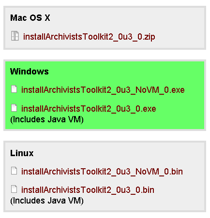
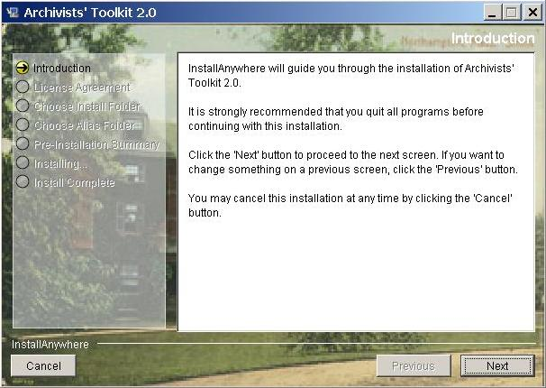
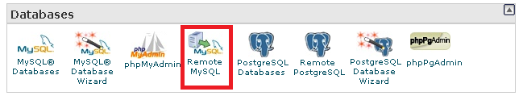
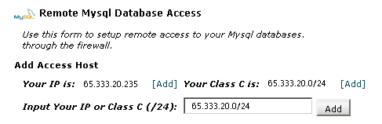
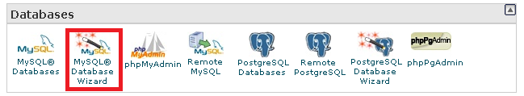
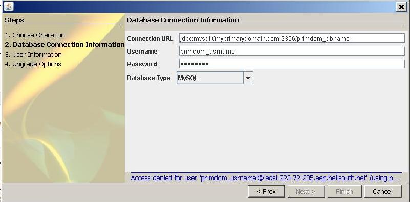
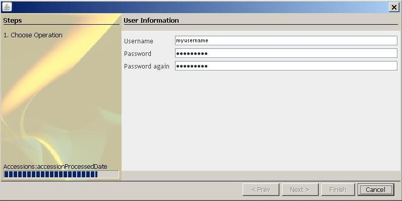

Installing Archivists' Toolkit on a remote MySQL database with Windows
I'm lucky enough to be using Archivists' Toolkit (AT) at my internship with the Atlanta University Center. AT is an open source archival data management system that allows archivists (or graduate interns) to enter the finding aid data for a collection without knowing how to code EAD.
Being a curious person, and a glutton for punishment, I thought I'd try to install and use AT on my Windows Vista laptop and connect to a test MySQL database in my shared web hosting account (at bluehost). I discovered a few gotchas and have, I hope, explained the installation process in a clear, linear way that will help others perform this installation more quickly. Mind you, I came to the realization that AT currently doesn't work on Vista, but the steps are the same for XP.
- Download latest Archivists' Toolkit (AT) client to your personal computer (differs depending on whether you have Windows, Mac, or Linux). I chose the Windows flavor of the 2.0 version, the one that included Java VM.
 - Install this client on your personal computer, following the instructions presented on screen.
 - Login to the cpanel of your shared hosting and whitelist your own IP address (on bluehost, that's under Databases > Remote MySQL).

You'll want to add the Class C address if, as mine does, your Internet Service Provider changes your IP address dynamically.
 - Still in your cpanel, use the database wizard to create a blank MySQL database, as well as a user and password for a power user with ALL rights and privileges to that database. Then create a user with a different name and password that has more limited permissions (namely: Select, Insert, Update, Delete and Lock_tables).
 - On your personal computer, find the location of the Maintenance Program (on Windows, it's at: C:\Program Files\Archivists' Toolkit 2.0\Maintenance Program 2.0.exe) and run it. Follow the AT instructions for initializing a database. For bluehost, connection URL will look something like this: jdbc:mysql://myprimarydomain.com:3306/primdom_dbname. Remember that your administrative (power user) username will probably look this: primdom_usrname.

 - Wait a while, for the program to initialize (i.e. set up) your database. This is a separate step because it can take A LONG TIME to complete. You might want to make a cup of tea while you're waiting. And catch a movie at the theater. Or, I suppose, write a blog post about how to install Archivist's Toolkit. :)
- Next, after using the limited permissions user to set up the connection, create two user accounts: an administrator (with class 5 permissions) and an editor (with class 4 or below permissions). You'll want to use the editor for regular use and will only need the administrator for special repository changes.
- The set up above worked perfectly fine on Windows XP, but needed an extra step for Windows Vista. Hmmm...I wonder if it works on Windows 7's XP mode (perhaps the subject for a later test)? To get this to work on Vista, I deleted the following file: C:\Users\MyName\atdbinfo.txt and then re-tried opening AT. This made the connection settings screen appear, but a number of issues still exist with AT on Vista (such as field names not appearing in some screens).
My Recommendation: Don't do this on Windows Vista, use XP.
Comments
Visitor
Thanks!!
Hi Adelle! I did this a couple of months ago myself and definitely ran into some gothchas that weren't at all addressed in the AT documentation, so thanks for this.
Adelle Frank
Glad to share!
I'm happy to share my "journey" of pain, frustration and return to the XP fold for running AT.
I'm now working to partition an old desktop I have to reinstall XP (I was playing around with openSUSE), just so I can use AT at home without messing up my primary computer.
But, if anyone has any suggestions for making AT work on Vista, I'm all ears.